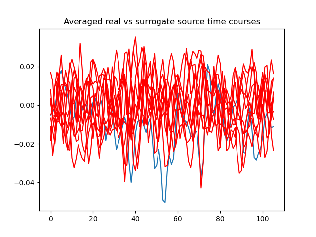

Note
Go to the end to download the full example code
Generate surrogate STCs¶
Example to show surrogate generation on STCs using the jumeg Surrogates module.
Opening raw data file /Users/praveen.sripad/nanna_data/mne_data/MNE-sample-data/MEG/sample/sample_audvis_filt-0-40_raw.fif...
Read a total of 4 projection items:
PCA-v1 (1 x 102) idle
PCA-v2 (1 x 102) idle
PCA-v3 (1 x 102) idle
Average EEG reference (1 x 60) idle
Range : 6450 ... 48149 = 42.956 ... 320.665 secs
Ready.
Reading inverse operator decomposition from /Users/praveen.sripad/nanna_data/mne_data/MNE-sample-data/MEG/sample/sample_audvis-meg-oct-6-meg-inv.fif...
Reading inverse operator info...
[done]
Reading inverse operator decomposition...
[done]
305 x 305 full covariance (kind = 1) found.
Read a total of 4 projection items:
PCA-v1 (1 x 102) active
PCA-v2 (1 x 102) active
PCA-v3 (1 x 102) active
Average EEG reference (1 x 60) active
Noise covariance matrix read.
22494 x 22494 diagonal covariance (kind = 2) found.
Source covariance matrix read.
22494 x 22494 diagonal covariance (kind = 6) found.
Orientation priors read.
22494 x 22494 diagonal covariance (kind = 5) found.
Depth priors read.
Did not find the desired covariance matrix (kind = 3)
Reading a source space...
Computing patch statistics...
Patch information added...
Distance information added...
[done]
Reading a source space...
Computing patch statistics...
Patch information added...
Distance information added...
[done]
2 source spaces read
Read a total of 4 projection items:
PCA-v1 (1 x 102) active
PCA-v2 (1 x 102) active
PCA-v3 (1 x 102) active
Average EEG reference (1 x 60) active
Source spaces transformed to the inverse solution coordinate frame
Not setting metadata
72 matching events found
Setting baseline interval to [-0.19979521315838786, 0.0] s
Applying baseline correction (mode: mean)
Created an SSP operator (subspace dimension = 3)
4 projection items activated
Preparing the inverse operator for use...
Scaled noise and source covariance from nave = 1 to nave = 1
Created the regularized inverter
Created an SSP operator (subspace dimension = 3)
Created the whitener using a noise covariance matrix with rank 302 (3 small eigenvalues omitted)
Computing noise-normalization factors (dSPM)...
[done]
Picked 305 channels from the data
Computing inverse...
Eigenleads need to be weighted ...
Processing epoch : 1 / 72 (at most)
Processing epoch : 2 / 72 (at most)
Processing epoch : 3 / 72 (at most)
Processing epoch : 4 / 72 (at most)
Processing epoch : 5 / 72 (at most)
Processing epoch : 6 / 72 (at most)
Processing epoch : 7 / 72 (at most)
Processing epoch : 8 / 72 (at most)
Processing epoch : 9 / 72 (at most)
Processing epoch : 10 / 72 (at most)
Processing epoch : 11 / 72 (at most)
Processing epoch : 12 / 72 (at most)
Processing epoch : 13 / 72 (at most)
Processing epoch : 14 / 72 (at most)
Processing epoch : 15 / 72 (at most)
Processing epoch : 16 / 72 (at most)
Processing epoch : 17 / 72 (at most)
Processing epoch : 18 / 72 (at most)
Processing epoch : 19 / 72 (at most)
Processing epoch : 20 / 72 (at most)
Processing epoch : 21 / 72 (at most)
Processing epoch : 22 / 72 (at most)
Processing epoch : 23 / 72 (at most)
Processing epoch : 24 / 72 (at most)
Processing epoch : 25 / 72 (at most)
Processing epoch : 26 / 72 (at most)
Processing epoch : 27 / 72 (at most)
Processing epoch : 28 / 72 (at most)
Rejecting epoch based on MAG : ['MEG 1711']
Processing epoch : 29 / 72 (at most)
Processing epoch : 30 / 72 (at most)
Processing epoch : 31 / 72 (at most)
Processing epoch : 32 / 72 (at most)
Processing epoch : 33 / 72 (at most)
Processing epoch : 34 / 72 (at most)
Processing epoch : 35 / 72 (at most)
Processing epoch : 36 / 72 (at most)
Processing epoch : 37 / 72 (at most)
Processing epoch : 38 / 72 (at most)
Processing epoch : 39 / 72 (at most)
Processing epoch : 40 / 72 (at most)
Processing epoch : 41 / 72 (at most)
Processing epoch : 42 / 72 (at most)
Processing epoch : 43 / 72 (at most)
Processing epoch : 44 / 72 (at most)
Processing epoch : 45 / 72 (at most)
Processing epoch : 46 / 72 (at most)
Processing epoch : 47 / 72 (at most)
Processing epoch : 48 / 72 (at most)
Processing epoch : 49 / 72 (at most)
Processing epoch : 50 / 72 (at most)
Processing epoch : 51 / 72 (at most)
Processing epoch : 52 / 72 (at most)
Processing epoch : 53 / 72 (at most)
Processing epoch : 54 / 72 (at most)
Processing epoch : 55 / 72 (at most)
Processing epoch : 56 / 72 (at most)
Processing epoch : 57 / 72 (at most)
Processing epoch : 58 / 72 (at most)
Processing epoch : 59 / 72 (at most)
Processing epoch : 60 / 72 (at most)
Processing epoch : 61 / 72 (at most)
Processing epoch : 62 / 72 (at most)
Processing epoch : 63 / 72 (at most)
Processing epoch : 64 / 72 (at most)
Processing epoch : 65 / 72 (at most)
Processing epoch : 66 / 72 (at most)
Processing epoch : 67 / 72 (at most)
Processing epoch : 68 / 72 (at most)
Processing epoch : 69 / 72 (at most)
Processing epoch : 70 / 72 (at most)
Processing epoch : 71 / 72 (at most)
[done]
computing surrogate 0
computing surrogate 1
computing surrogate 2
computing surrogate 3
computing surrogate 4
computing surrogate 5
computing surrogate 6
computing surrogate 7
computing surrogate 8
computing surrogate 9
import os.path as op
import numpy as np
import matplotlib.pyplot as pl
from mne.datasets import sample
from mne.minimum_norm import read_inverse_operator, apply_inverse_epochs
import mne
from jumeg.jumeg_surrogates import Surrogates, check_power_spectrum
data_path = sample.data_path()
subjects_dir = op.join(data_path, 'subjects')
fname_inv = op.join(data_path, 'MEG/sample/sample_audvis-meg-oct-6-meg-inv.fif')
fname_raw = op.join(data_path, 'MEG/sample/sample_audvis_filt-0-40_raw.fif')
fname_event = op.join(data_path, 'MEG/sample/sample_audvis_filt-0-40_raw-eve.fif')
stcs_testing = True
raw = mne.io.read_raw_fif(fname_raw)
events = mne.read_events(fname_event)
inverse_operator = read_inverse_operator(fname_inv)
# add a bad channel
raw.info['bads'] += ['MEG 2443']
# pick MEG channels
picks = mne.pick_types(raw.info, meg=True, eeg=False, stim=False, eog=False,
exclude='bads')
# define epochs for left-auditory condition
event_id, tmin, tmax = 1, -0.2, 0.5
epochs = mne.Epochs(raw, events, event_id, tmin, tmax, picks=picks,
baseline=(None, 0), reject=dict(mag=4e-12, grad=4000e-13))
snr = 1.0 # use lower SNR for single epochs
lambda2 = 1.0 / snr ** 2
method = "dSPM" # use dSPM method (could also be MNE or sLORETA)
stcs = apply_inverse_epochs(epochs, inverse_operator, lambda2, method,
pick_ori="normal", return_generator=False)
# compute surrogates for one STC
surr_stcs = Surrogates(stcs[0])
mysurr = surr_stcs.compute_surrogates(n_surr=10, return_generator=False)
# check if surrogates are correctly computed
assert not np.array_equal(mysurr[0].data,
mysurr[1].data), 'Surrogates mostly equal'
assert not np.array_equal(stcs[0].data,
mysurr[2].data), 'Surrogates equal to original'
# visualize results by plotting 1 the average across voxels
# of original and surrogate STC
pl.plot(stcs[0].data.mean(axis=0))
for i in mysurr:
pl.plot(i.data.mean(axis=0), color='r')
pl.title('Averaged real vs surrogate source time courses')
pl.show()
Total running time of the script: ( 0 minutes 1.574 seconds)